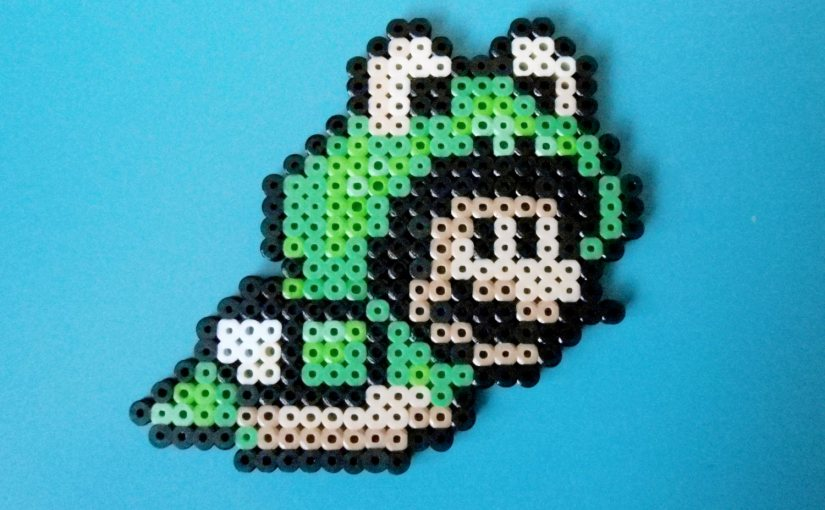

Video: Early Splatoon Sloshing Machine Weapon Tour And Gameplay
There’s a brand new Sloshing Machine weapon coming to Splatoon this evening in the United States and YouTube channel NintendoMe has been given early access to the latest
Slosher. If you want an extensive overview of the ink-tastic new weapon along with a tour of it in action then this video is for you. Enjoy!
Xenoblade Chronicles X Survival Guide Part 4: Mining Your Own Business Is Now Live
The Xenoblade Chronicles X Survival Guide part 4 is now live on Nintendo’s YouTube channel. This episode focuses on the Frontiernav, FN site info, and Arms
Manufacturers.This is part 4 of 5, so another should follow shortly. You can watch this episode above.

The Frog Suit Costume Is Coming To Super Mario Maker
Super Mario fans will be exceptionally pleased as it has been revealed that the frog suit from Super Mario Bros 3 is coming to Super Mario Maker. The news
was spotted in a NES Remix event that rewards players with the classic suit. In case you didn’t know, the original iconic suit allowed players to “jump higher, swim faster, and
resist water currents better.”
Nintendo Shares A Thanksgiving Skit Starring A Very Hungry amiibo Kirby
You might want to think twice before inviting Kirby to your next Thanksgiving dinner – or even his amiibo, which is apparently also capable of consuming large amounts
of food in a matter of seconds. The scary thing is that Kirby doesn’t ever seem to get full, so be sure to keep an eye on your grub if he’s ever around. The pink puffball’s
gluttonous behavior can be observed in the mini skit shown in the above video, featuring the acting talents of senior writer for Nintendo at Golin Chad Concelmo.
First 75 Minutes Of Retail Version Of Monster Hunter X
Monster Hunter X is finally available for purchase in Japan and will undoubtedly be a massive success for developer, Capcom. Tilmen from Tilmendomination has managed
to get his copy on time and has given us a look at the first 75 minutes of the retail title. As I’m sure you are already aware, we have yet to hear when we will get Monster Hunter
X in the west. Let’s hope we don’t have to wait too long!